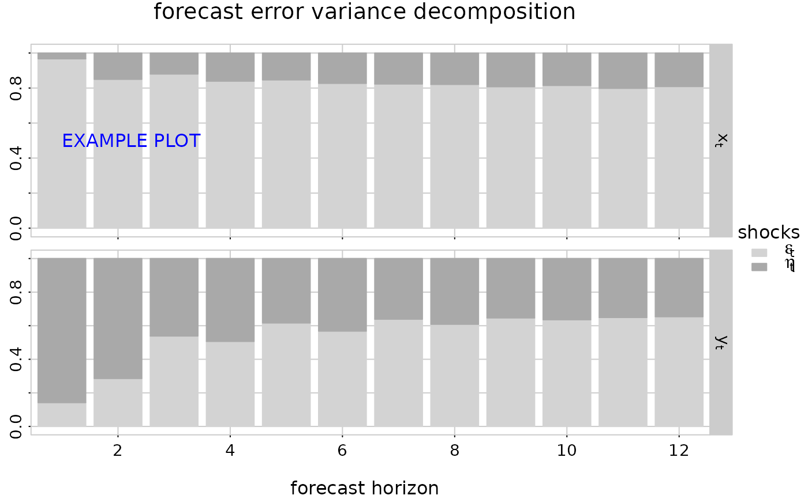

Plot Forecast Error Variance Decomposition
plot.fevardec.RdPlot Forecast Error Variance Decomposition
Usage
# S3 method for fevardec
plot(
x,
main = NA,
xlab = NA,
col = NA,
y_names = x$names,
u_names = y_names,
parse_names = FALSE,
...
)Arguments
- x
fevardec()object.- main
(character string) overall title for the plot.
main=NULLomits the title andmain = NAsets a default title.- xlab
(character string) title for the x-axis.
xlab=NULLomits the title andxlab = NAsets a default x-axis title.- col
(m)-dimensional vector of colors. If
NAthen a default colormap is chosen.- y_names
optional (m)-dimensional character vector with names for the components of the time-series/process.
- u_names
optional (m)-dimensional character vector with names for the orthogonalized shocks.
- parse_names
boolean. If
TRUEthen the series- and shock- names are parsed toexpression()before plotting. See alsogrDevices::plotmath()on the usage of expressions for plot annotations.- ...
not used.
Value
This plot routine returns (invisibly) a function, subfig say, which may be used to add additional graphic elements to the subfigures. The call opar = subfig(i) creates a new (sub) plot at the (i)-th position with suitable margins and axis limits. See the example below.
Examples
# set seed for reproducible results
set.seed(1995)
model = test_stspmod(dim = c(2,2), s = 3, bpoles = 1, bzeroes = 1)
model$names = c('x[t]', 'y[t]')
# impulse response
irf = impresp(model, lag.max = 11, H = 'eigen')
# forecast error variance decomposition
fevd = fevardec(irf)
# plot it
subfig = plot(fevd, col = c('lightgray','darkgray'),
u_names = c('epsilon[t]', 'eta[t]'), parse_names = TRUE)
opar = subfig(1)
graphics::text(x = 1, y = 0.5, 'EXAMPLE PLOT', col = 'blue', adj = c(0, 0.5))

graphics::par(opar)
# reset seed
set.seed(NULL)